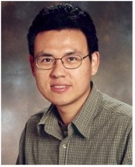
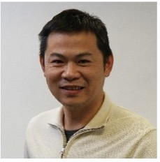

Intelligent Vehicle and Transportation Systems
- Special Session on IJCNN 2024
Special Session Objectives and Topics
The research and development of intelligent vehicles and transportation systems are rapidly growing worldwide. Intelligent transportation systems are making transformative changes in all aspects of surface transportation based on vehicle-to-vehicle (V2V), vehicle-to-infrastructure (V2I) connectivity, and automated driving (AV). With the support of advanced equipment, a host of intelligent devices in cars have made various functions in practice, such as airbag control, unwelcome intrusion detection, collision warning and avoidance, power management and navigation, driver alertness monitoring, etc. Among those functions, the neural network plays a critical role in building all types and levels of intelligence in vehicle and transportation systems. The objective of this special session is to provide a forum for researchers and practitioners to present advanced research in neural network models with a focus on innovative applications for intelligent vehicle and transportation systems.
This session seeks contributions on the latest developments and emerging research in all aspects of intelligent vehicle and transportation systems. Specific topics include, but are not limited to:
| • Advanced transportation information and communication systems |
• Advanced Transportation Management |
| • Air, Road, and Rail Traffic Management |
• Automated driving and driverless car |
| • Cloud computing and big data in transportation and vehicle systems |
• Collision detection and avoidance |
| • Connected vehicles of the future |
• Driver assistance and automation systems |
| • Reinforcement learning, neural dynamics and adaptive control in vehicle systems |
• Driver state detection and monitoring |
| • Learning and adaptive Control |
• Machine learning algorithm for multi-modal intelligent transport systems and services |
| • Object recognitions such as pedestrian detection, traffic sign detection and recognition |
• Personalized driver and traveler support systems |
| • Pervasive and ubiquitous computing in logistics |
• Machine learning algorithm for driving route prediction and optimum path planning |
| • Simulation and forecasting models |
• Spatio-temporal traffic pattern recognition |
| • Trip modeling and driver speed prediction |
• Vehicle communications and connectivity |
| • Machine learning algorithm for vehicle energy management and optimization in hybrid vehicles |
• Vehicle fault diagnostics and health monitoring |
Session Organizers
Prof. Yi Lu Murphey (yilu@umich.edu), Dr.Xian Wei (xian.wei@tum.de), and Dr. Alexander Katriniok (de.alexander.katriniok@ieee.org), and Dr. Enrique Dominguez (enriqued@lcc.uma.es).
Short Biographies of All Organizers
Yi Lu Murphey is the Paul K Trojan Collegiate Professor of Engineering and a Professor of Electrical and Computer Engineering at the University of Michigan-Dearborn.
She is currently the director of the Intelligent Systems Lab and Driving Simulator Lab at the University of Michigan-Dearborn.
She received a M.S. degree in computer science from Wayne State University, Detroit, Michigan, in 1983,
and a Ph.D degree with a major in Computer Engineering and a minor in Control Engineering from the University of Michigan, Ann Arbor, Michigan, in 1989.
During 2007 ~ 2020, Professor Murphey served as the Chair of the ECE department, Associate Dean for Graduate Education and Research,
and the Vice Provost for Research at the University of Michigan-Dearborn. Her current research interests are in the areas of machine learning, pattern recognition,
computer vision, and intelligent systems with applications to optimal vehicle power management, ADAS, autonomous vehicles, intelligent transportation systems,
and Alzheimer’s disease and dementia research. Dr. Murphey is a fellow of IEEE, a Distinguished Lecturer for the IEEE Vehicular Society and IEEE Computational Intelligence Society.
Affiliation: College of Engineering and Computer Science for Graduate Education, University of Michigan-Dearborn.
Webpages: https://umdearborn.edu/yi-lu-murphey
Xian Wei received the M.S. degree in computer science from Shanghai Jiaotong University, Shanghai, China,
and received the Ph.D. degree in computer engineering from the Technical University of Munich, Munich, Germany. Currently,
he is a research professor in the Software Engineering Institute (SEI) at the East China Normal University, Shanghai, China.
He has been working as a principal investigator (PI) in Fujian Institute of Research on the Structure of Matter, Chinese Academy of Sciences (CAS),
since July 2017. His research interests focus on geometric machine learning and time series analysis. The applications include multi-sensor fusion for intelligent car,
robotic vision, images and point clouds modeling, synthesis, recognition and semantics. He has authored over 100 publications in refereed journals and conference proceedings.
He is a senior member of IEEE, IET, INSAI, CAA and CCF.
Affiliation: Software Engineering Institute (SEI), the East China Normal University, Shanghai.
Webpages: https://www.researchgate.net/profile/Xian-Wei-3
Justin Dauwels is an Associate Professor at the TU Delft (Signals and Systems, Department of Microelectronics). His research interests are in data analytics with applications to intelligent transportation systems, autonomous systems, and analysis of human behaviour and physiology. He obtained his PhD degree in electrical engineering at the Swiss Polytechnical Institute of Technology (ETH) in Zurich in December 2005. Moreover, he was a postdoctoral fellow at the RIKEN Brain Science Institute (2006-2007) and a research scientist at the Massachusetts Institute of Technology (2008-2010). He has been elected as IEEE SPS 2024 Distinguished Lecturer. He has been a JSPS postdoctoral fellow (2007), a BAEF fellow (2008), a Henri-Benedictus Fellow of the King Baudouin Foundation (2008), and a JSPS invited fellow (2010, 2011).
He served as Chairman of the IEEE CIS Chapter in Singapore from 2018 to 2020, and served as Associate Editor of the IEEE Transactions on Signal Processing (2018 - 2023), and serves currently as Associate Editor (2021-2023) and Subject Editor (since 2023) of the Elsevier journal Signal Processing, Area Editor for the IEEE Signal Processing Magazine (since 2023), member of the Editorial Advisory Board of the International Journal of Neural Systems (since 2021), and organizer of IEEE conferences and special sessions. He was also Elected Member of the IEEE Signal Processing Theory and Methods Technical Committee and IEEE Biomedical Signal Processing Technical Committee (both in 2018-2023), and is currently Elected Member of the IEEE Machine Learning for Signal Processing Technical Committee and the IEEE Emerging Transportation Technology Testing (ET3) Technical Committee. His research team has won several best paper awards at international conferences and journals. His academic lab has spawned four startups across a range of industries, ranging from AI for healthcare to autonomous vehicles.
Affiliation: Circuits and Systems (CAS), Department of Microelectronics, TU Delft.
Webpages: https://microelectronics.tudelft.nl/People/bio.php?id=744

Hao Shen received his Ph.D. in Engineering from the Australian National University, Australia, in 2008. From December 2008 to September 2017, he was a post-doctoral researcher at the Chair for Data Processing, Technical University of Munich, Germany. In October 2017, he joined fortiss GmbH, Research Institute of the Free State Bavaria, Munich, Germany, as the leader of Machine Learning. Currently, he is also Privatdozent (Adjunct Teaching Professor) at Department of Computer Engineering, Technical University of Munich, Germany. His research interests include machine learning for signal processing, e.g., geometric optimization, blind signal separation, sparse representation, deep representation learning, and deep reinforcement learning.
Affiliation: fortiss GmbH, Research Institute of the Free State of Bavaria for software-intensive systems.
Webpages: https://www.fortiss.org/ergebnisse/publikationen/autor/hao-shen
Enrique Dominguez is a Full Professor in Artificial Intelligence at the University of Malaga (Spain), and a member of the European Innovation Partnership on Smart Cities and Communities (EIP-SCC). He has collaborated with several companies (Airzone, Fujitsu, Altra Corporacion, Fundación Andaluza de la Seguridad Social, Evita, Acerca, ...) leading the computer vision workgroup of different research projects. Dominguez is author of over 50 peer-reviewed publications, he also serves as reviewer of several journals such as IEEE Trans. of Neural Networks and Learning Systems, Neurocomputing, Neural Networks, International Journal of Parallel, Emergent and Distributed Systems, Neural Computing & Applications, Optimization, etc. and an associate editor of the International Journal of Computer Vision and Image Processing (IJCVIP). In addition, he has participated chairing several special sessions or as traditional member of the program committee of several conferences such as SSCI, WCCI, IJCNN, IWANN, BMIC, ICANN, ASC, EURO and others. His research interests include machine learning, deep learning, intelligent systems, computer vision, mobility and transport, intelligent logistics, and urban sustainable mobility.
Affiliation: Department of Computer Science, University of Malaga.
Webpages: http://www.lcc.uma.es/~enriqued

Fling (Finn) Tseng received dual M.S. Mechanical Engineering and Industrial & Operations Engineering from the University of Michigan, Ann Arbor in 2003 and Ph.D. with a major in Industrial and System Engineering from the Wayne State University in 2017. As a full-time Research Engineer at Ford Research and Advanced Engineering since 2007, he has involved in both research and product development for various applications related to diagnostics & prognostics of systems and human behaviors, recommendation systems for user intents and preferences and adaptive user coaching systems. His research interests include online evolving AIML Systems, Adaptive Knowledge-based systems and learning mechanisms for partially observable patterns.
Affiliation: In-Cabin UX AIML, Digital Cockpit Tech, Research & Advanced, Ford Motor Company.
Webpages: https://scholar.google.com/citations?hl=en&user=ElLMgCwAAAAJ&view_op=list_works&sortby=pubdate
Important Dates
- 15 November 2023 Special Session & Workshop Proposals Deadline
- 15 December 2023 Competition and Tutorial Proposals Deadline
- 15 Jan 2024 Submission Deadline
- 15 Mar 2024 Paper Acceptance Notification Date
- 15 April 2024 Final Paper Submission and Early Registration Deadline
- 19-24 July 2024 IEEE WCCI 2024, Glasgow, Scotland, UK
Submission Guidelines
This special session will be held in the 2024 International Joint Conference on Neural Networks (IJCNN), a collocated conference of the 2024 IEEE World Congress on Computational Intelligence (https://wcci2024.org), in Glasgow, Scotland, United Kingdom, at July 19-24, 2024.
All papers should be prepared according to the IJCNN 2024 submission policy and should be submitted using the conference website (https://wcci2024.org/submissions). To submit your paper to this special session, please make sure to select “Intelligent Vehicles and Transportation Systems (IVTS)” under “Special Session Papers” under IJCNN.
For any inquiries or doubts, please feel free to contact the technical manager Zhengyu Li (zyli@stu.ecnu.edu.cn) and Jianzhang Wang (zhengjianzhang18@mails.ucas.edu.cn) and Kexin Ke (kohsin1019@gmail.com).